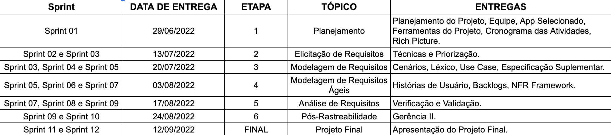
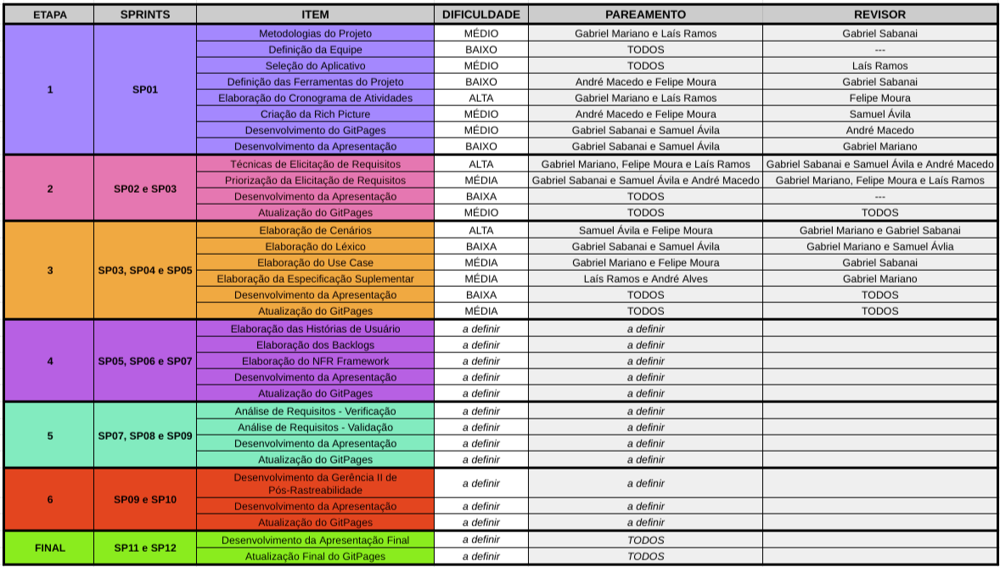

Cronograma
| Versão | Data | Modificação | Autor |
|---|---|---|---|
| 1.0 | 30/06/2022 | Criação do cronograma | Gabriel Mariano, Laís Ramos |
| 1.1 | 13/07/2022 | Revisäo do cronograma | Felipe Moura |
Tabela 1: versionamento
Introdução
Foi analisado o cronograma do semestre letivo, os prazos da disciplina e a disponibilidade dos integrantes. Dessa forma, foi criado um cronograma (Imagem 1) que foi dividido em etapas para a realização das atividades e cumprimento dos prazos (Tabela 2), todos baseados no product backlog descrito (Tabela 3).
Cronograma de atividades

Imagem 1: Cronograma de sprints
Datas e Sprints
| Sprint | Data de entrega | Etapa | Tópico | Entregas |
|---|---|---|---|---|
| Sprint 1 | 29/06 | 1 | Planejamento | Planejamento do Projeto, Equipe, App Selecionado, Ferramentas do Projeto, Cronograma das Atividades, Rich Picture. |
| Sprint 2 | 13/07 | 2 | Elicitação de Requisitos | Técnicas e Priorização |
| Sprint 3 | 13/07 | 2 | Elicitação de Requisitos | Técnicas e Priorização |
| Sprint 4 | 20/07 | 3 | Modelagem de Requisitos | Cenários, Léxico, Use Case, Especificação Suplementar |
| Sprint 5 | 20/07 | 3 | Modelagem de Requisitos | Cenários, Léxico, Use Case, Especificação Suplementar |
| Sprint 6 | 03/08 | 4 | Modelagem de Requisitos Ágeis | Histórias de Usuário, Backlogs, NFR Framework |
| Sprint 7 | 03/08 | 4 | Modelagem de Requisitos Ágeis | Histórias de Usuário, Backlogs, NFR Framework |
| Sprint 8 | 17/08 | 5 | Análise de Requisitos | Verificação e Validação |
| Sprint 9 | 17/08 | 5 | Análise de Requisitos | Verificação e Validação |
| Sprint 10 | 24/08 | 6 | Pós-rastreabilidade | Gerência |
| Sprint 11 | 12/09 | 7 | Projeto Final | Apresentação do Projeto Final |
Tabela 2: Tabela de datas e sprints
Product Backlog

Tabela 3: Product Backlog